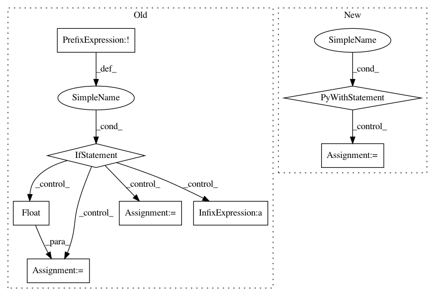

aab3902d4a7d55f5a86058854adc36b8a12c873f,catalyst/dl/callbacks/base.py,OptimizerCallback,on_batch_end,#OptimizerCallback#Any#,202
Before Change
return
self._accumulation_counter += 1
if not self.fp16:
model = state.model
optimizer = state.get_key(
key="optimizer", inner_key=self.optimizer_key
)
loss.backward()
if (self._accumulation_counter + 1) % self.accumulation_steps == 0:
self.grad_step(
optimizer=optimizer,
optimizer_wd=self._optimizer_wd,
grad_clip_fn=self.grad_clip_fn
)
model.zero_grad()
self._accumulation_counter = 0
else:
model = state.model
model.zero_grad()
optimizer = state.get_key(
key="optimizer", inner_key=self.optimizer_key
)
loss = state.get_key(key="loss", inner_key=self.optimizer_key)
scaled_loss = self.fp16_grad_scale * loss.float()
scaled_loss.backward()
master_params = list(optimizer.param_groups[0]["params"])
model_params = list(
filter(lambda p: p.requires_grad, model.parameters())
)
copy_grads(source=model_params, target=master_params)
for param in master_params:
param.grad.data.mul_(1. / self.fp16_grad_scale)
self.grad_step(
optimizer=optimizer,
optimizer_wd=self._optimizer_wd,
grad_clip_fn=self.grad_clip_fn
)
copy_params(source=master_params, target=model_params)
torch.cuda.synchronize()
def on_epoch_end(self, state):
optimizer = state.get_key(
key="optimizer", inner_key=self.optimizer_key
)
After Change
// or expose another c"tor argument.
if hasattr(optimizer, "_amp_stash"):
from apex import amp
with amp.scale_loss(loss, optimizer) as scaled_loss:
scaled_loss.backward()
else:
loss.backward()
if (self._accumulation_counter + 1) % self.accumulation_steps == 0:
In pattern: SUPERPATTERN
Frequency: 3
Non-data size: 8
Instances
Project Name: Scitator/catalyst
Commit Name: aab3902d4a7d55f5a86058854adc36b8a12c873f
Time: 2019-05-20
Author: ekhvedchenya@gmail.com
File Name: catalyst/dl/callbacks/base.py
Class Name: OptimizerCallback
Method Name: on_batch_end
Project Name: EducationalTestingService/skll
Commit Name: ca10c185d94470054d693f19e7691523dbe3ec55
Time: 2019-03-05
Author: jbiggs@ets.org
File Name: skll/data/readers.py
Class Name: NDJReader
Method Name: _sub_read